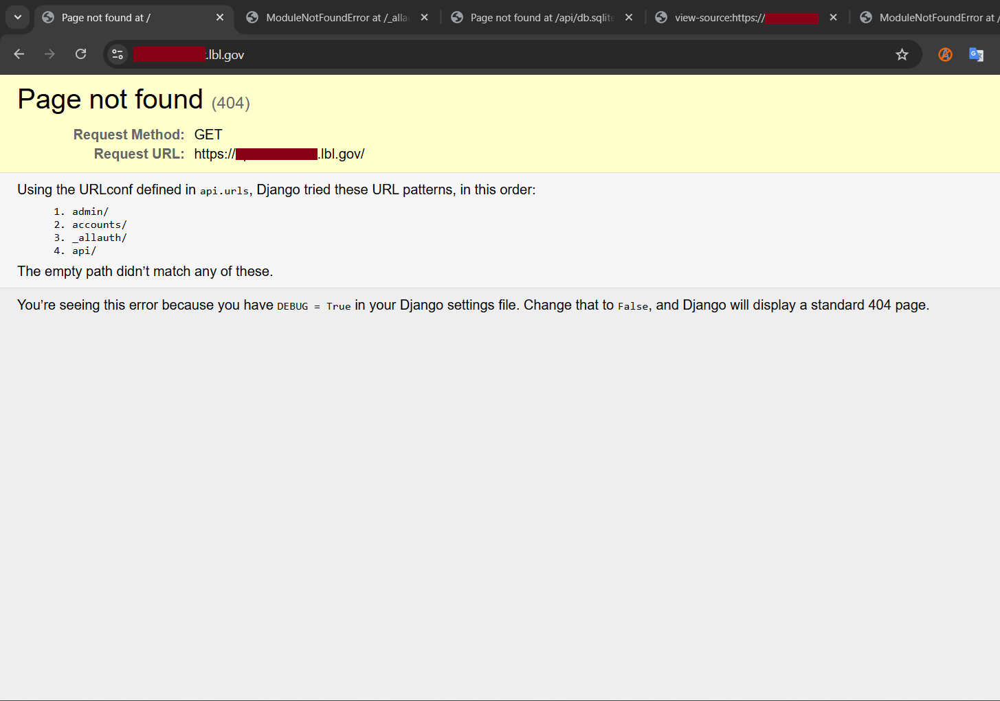
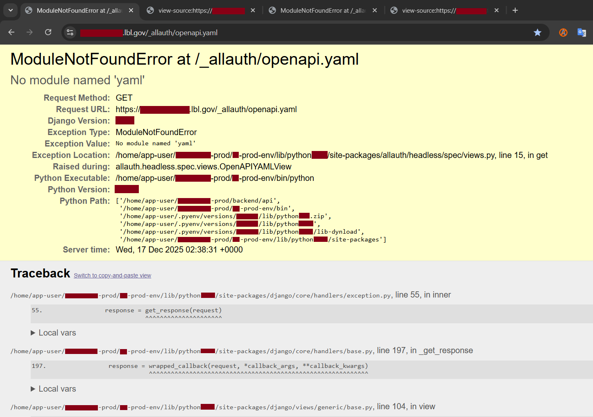
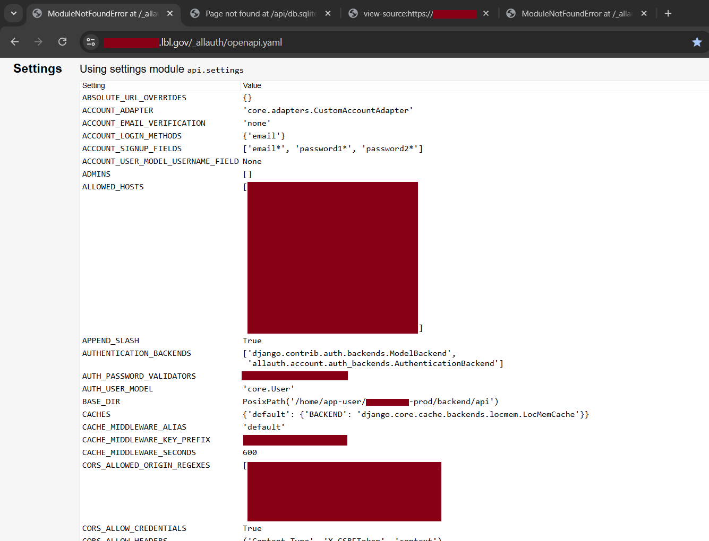
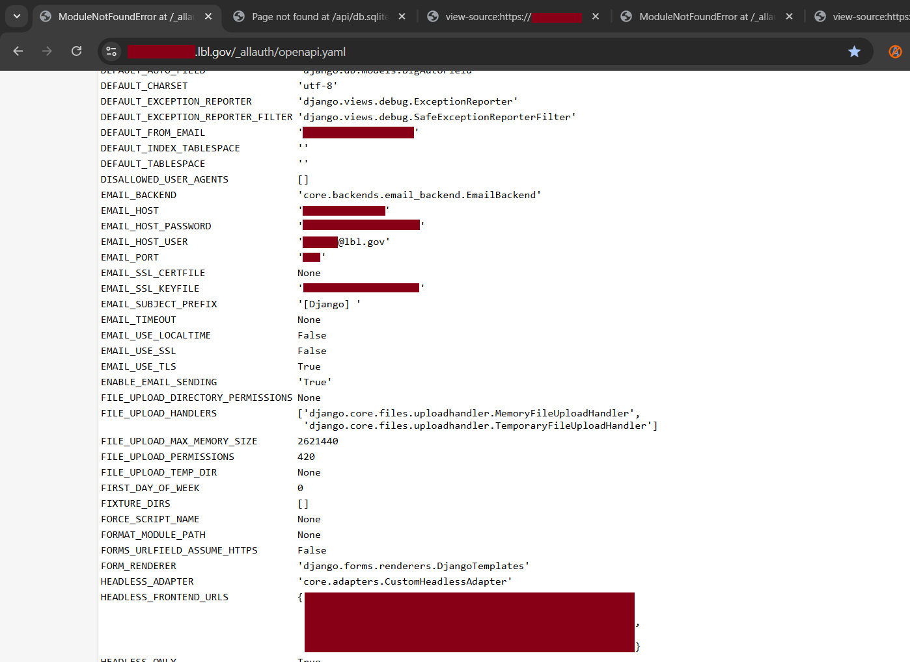
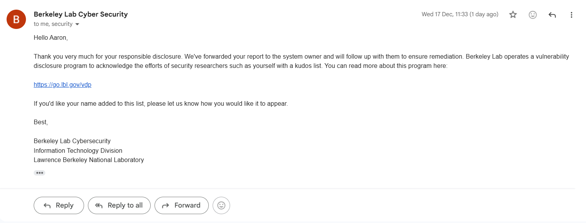

Django Server Misconfigurations at Berkeley Lab
As usual, I was spending my free time hunting for security flaws on foreign government websites, including those belonging to the Dutch Government, the UK Government, and most notably, the US Government. One random day, on 16 December 2025, I came across a LinkedIn post from someone whose name I can no longer remember. In the post, he mentioned that he had successfully found a security vulnerability in one of Lawrence Berkeley National Laboratory’s (LBNL) websites.
Out of curiosity, I visited https://go.lbl.gov/vdp and read through LBNL’s Vulnerability Disclosure Program rules. Unlike most VDPs, I genuinely think LBNL’s scope is well-suited for people who are lazy, like me. Let me explain.
Their scope explicitly disallows any testing that requires account creation. This means that all testing must be conducted in a fully public-facing, black-box manner. One could argue that this narrow scope significantly reduces the attack surface. However, from my perspective, it aligns perfectly with how I prefer to work.
Since I had some free time to spare, I figured that procrastinating would only do more harm than good. I immediately performed subdomain enumeration using C99’s Subdomain Finder, copied the results into a text file, and used the Bulk URL Opener browser extension to open multiple subdomains simultaneously.
The first 100 subdomains did not yield anything particularly interesting. I was mostly performing surface-level reconnaissance, hoping for quick wins. Most of the subdomains either returned HTTP 403 responses or required authentication via internal LBNL staff accounts.
I continued going through the list, opening more subdomains, skipping those that were clearly not worth further investigation, and keeping an eye out for anything unusual or promising.
Eventually, I reached roughly the 120th and 121st subdomains. Both turned out to be API endpoints for production and staging environments. These endpoints were clearly intended for programmatic access rather than human-facing web pages, which explained why viewing them directly in a browser did not reveal much.
At a surface level, it was apparent that these API endpoints were running on Django, which confirmed my suspicion that they were backend API services rather than static public websites. Django is a widely used Python web framework for building both web applications and RESTful APIs.

The moment I noticed that Django Debug Mode was enabled on a public-facing API endpoint, I knew I had found a significant security issue. In general, Django Debug Mode exposes highly detailed error information, including stack traces, environment variables, and sometimes even database credentials. This type of information can be extremely valuable to attackers and may lead to further exploitation or privilege escalation.
What made this even more interesting was that the debug page itself conveniently displayed several accessible paths, including admin/, accounts/, _allauth/, and api/. It felt almost like one of those games where, at the very beginning, you are given hints and tools to guide you forward.
I began modifying the URL by appending these paths to the base endpoint, hoping that each request might lead to something new. After about ten minutes of exploring many empty rooms, I finally stumbled upon an endpoint that immediately caught my attention:
https://redacted.lbl.gov/_allauth/openapi.yaml
The page returned a ModuleNotFoundError, but more importantly, it exposed extremely verbose debug information. As soon as I saw details such as the Python version and Python path, I knew this was a serious misconfiguration. I scrolled further down the page.


There it was. Sensitive server-side information laid out openly, effectively served on a silver platter for anyone curious enough.
I immediately drafted an email to the Berkeley Lab Cybersecurity team, explaining how I discovered the endpoint and providing clear steps to reproduce the issue. At the time, it was almost lunchtime on 17 December 2025 in Malaysia, while it was still the night of 16 December 2025 in the United States.
Exactly 25 minutes later, I received a reply from their cybersecurity team. They thanked me for the responsible disclosure and informed me that they would add my name to the White Hats for Science Kudos list. I replied shortly after, and about an hour later, I received a follow-up confirmation email.

It was a great feeling, especially just before the Christmas holiday season kicked in. Not only did I learn something new, but I was also acknowledged for helping to keep a major research laboratory more secure. It was a small win, but one that I would absolutely recommend experiencing.
See you in the next hack.
@aaronamran
December 2025